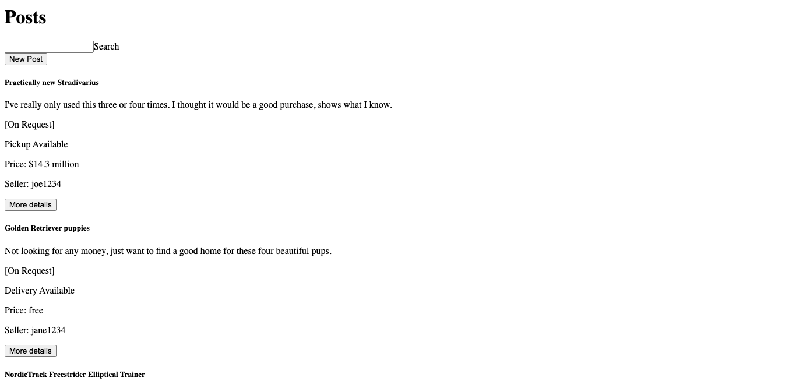
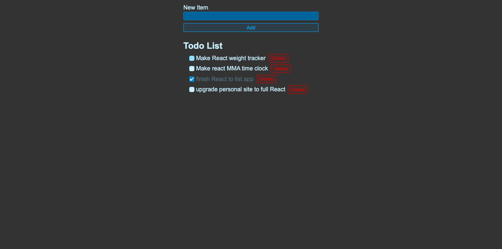
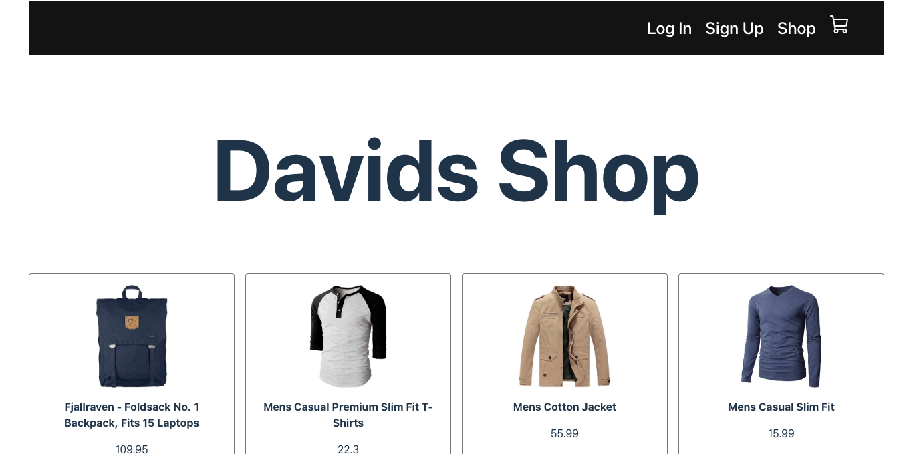

Things I've built
Stranger Things
Strangers Things is a sophisticated web application that serves as a platform for users to create, view, and manage posts. It incorporates a multitude of functionalities such as user authentication, post creation and deletion, messaging between users, and more. The application has been meticulously designed and developed to ensure a seamless user experience, facilitating easy navigation and interaction with various features.
The application is built using React, demonstrating a solid understanding of components, props, state, and effect hooks. Demonstrates proficiency in JavaScript fundamentals such as variable declaration, loops, control structures, and function declarations.
Strangers Things is a well-rounded project that showcases advanced web development skills and practices. From user authentication to API interaction and front-end development, the application embodies a range of competencies necessary for modern web application development.
Stranger ThingsReact To-Do List
This project is a dynamic and user-friendly To-Do List application built using React. It embodies a clean and intuitive design, ensuring that users can easily navigate through the application to manage their tasks efficiently.
This To-Do List application is a showcase of efficient software engineering practices in building practical and user-focused web applications. It not only stands as a testament to proficiency in React and modern web development techniques but also emphasizes a user-centric approach in software design and development.
React To Do ListE-Commerce Platform
This project is a robust and user-centric e-commerce platform designed to provide a seamless online shopping experience. Built with precision and a focus on usability, the application ensures that users can easily browse products, manage their shopping carts, and proceed to checkout with simplicity and ease.
The application is modularly designed using React components, each responsible for a specific functionality, ensuring code reusability and maintainability. Styling: CSS is meticulously utilized to ensure each component and page within the application is visually appealing and user-friendly.
This e-commerce platform exemplifies modern web development practices, emphasizing user experience and functional design. The application stands as a testament to the ability to create efficient, scalable, and user-focused e-commerce solutions.
Davids Shop